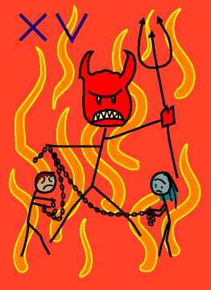

→
Damian Cugley →
Alleged Tarot 2002 →
png →
→
Damian Cugley →
Alleged Tarot 2002 →
png →
| « XIIII. Temperance | XVI. The Tower » | |
|  | ||
Upright: anger, oppressiveness, restriction
Reversed: intolerable situation, escape
Naturally the trumps includes a card for the Devil—like the Pope and Death, for the mediaeval European, the Devil was a fact of life, and the recurring villain in any number of folk tales and hearthside stories. Nevertheless the depiction of devils makes some people nervous. In more modern decks, this card is sometimes replaced with a picture of the Horned Man, a pagan god of fertility and nature—even though the interpretation of the card remains broadly the same.
The Devil card represents anger and resentment, and being trapped in a bad situation that you cannot escape (like the figures chained to the Devil’s plinth).
In my version of the card I omitted the plinth, so the chains of the the two figures at the bottom of the card are held by the devil himself.
See also Thirteen’s description on the Aeclectic Tarot site
If your browser supports SVG, then you should visit the SVG version of this page. It is so much more cool!